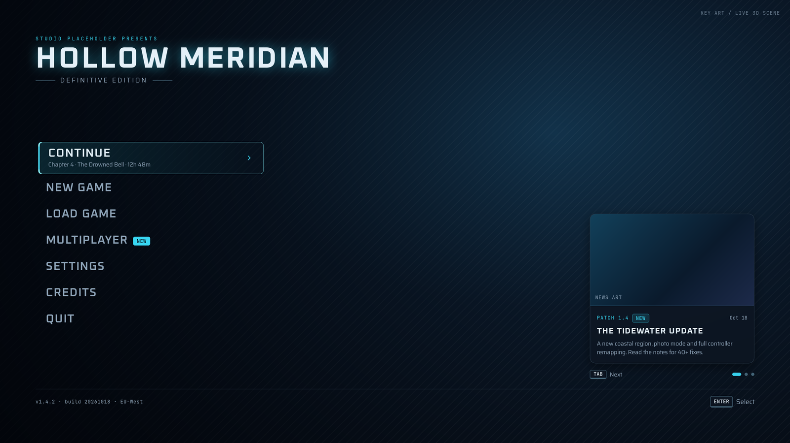
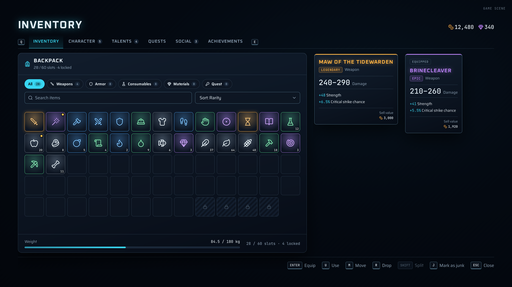
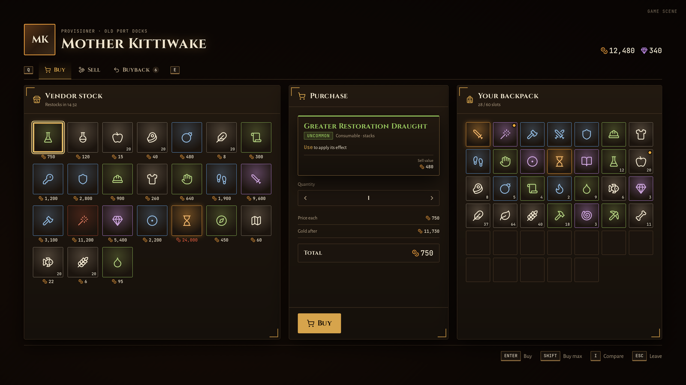
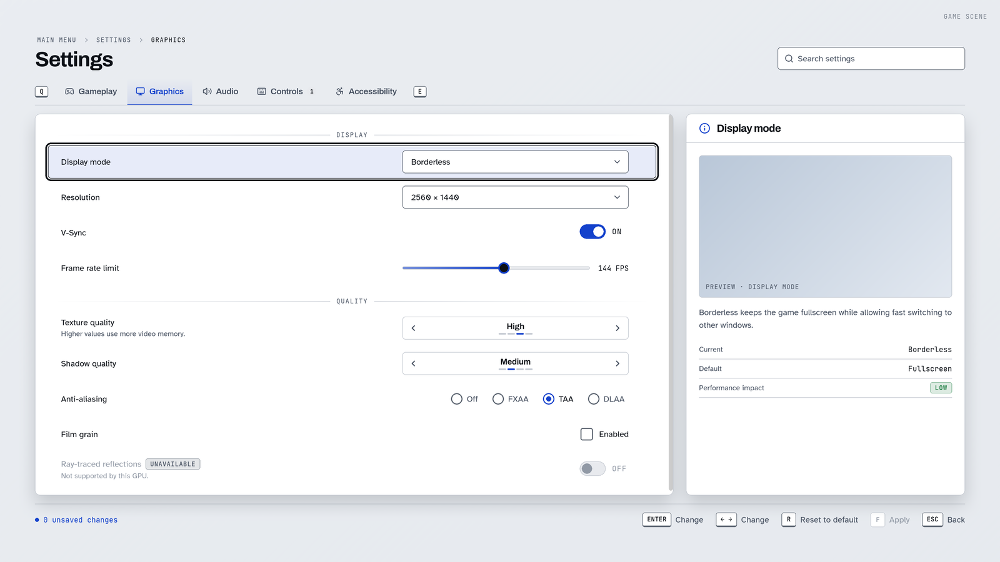
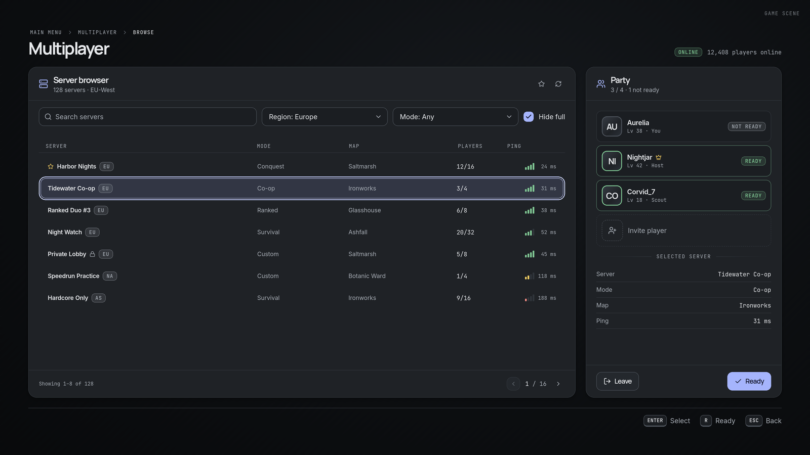
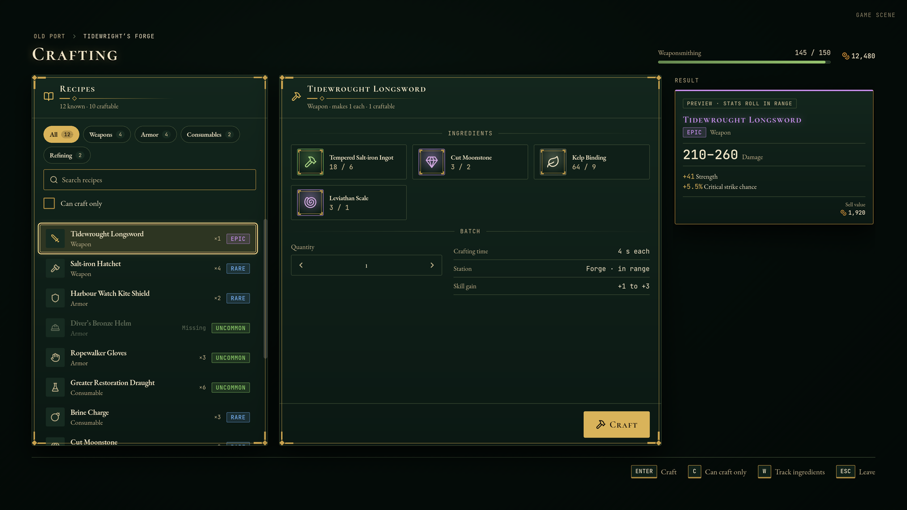
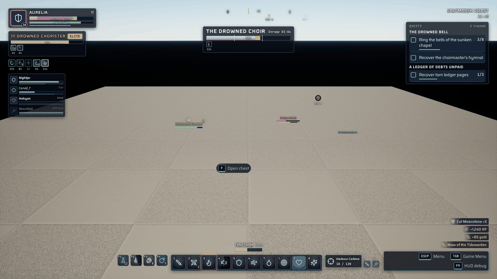
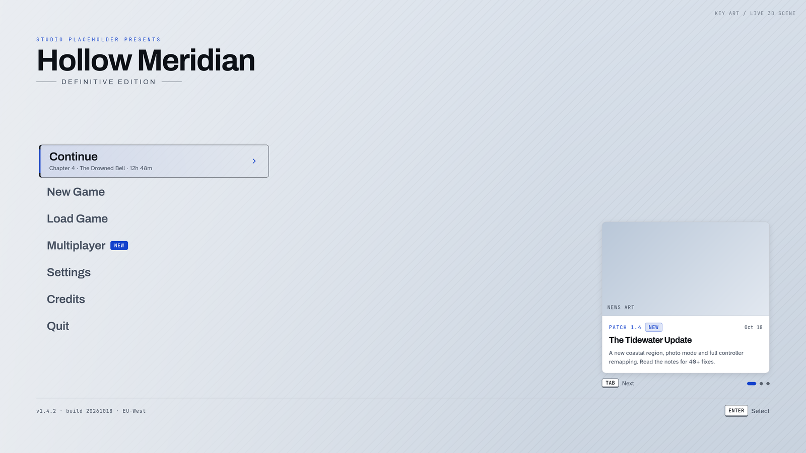

Demo¶
The companion plugin ArcRmlUIDemo is a complete example game UI: a splash screen, main menu, settings, save and load, credits, lobby, loading screen, HUD, pause menu, match results, vendor, crafting and a Game Menu hub with six tabs. Every screen is an RML document with an RCSS style sheet, bound to Unreal MVVM view models. All data is mock data and nothing is saved. The demo runs on Win64 clients and in the editor, not on dedicated servers.
Use it to see what a whole UI built on the plugin looks like, and to copy a screen or a component into your project. Walkthrough reads one of its screens part by part.
Install¶
The demo is in the Arc Lunzo Samples repository on GitHub, in
Plugins/ArcRmlUIDemo. To run it without a project of your own, open the repository's ArcRmlUIHost.uproject. In your
own project, put the ArcRmlUIDemo folder in your project's Plugins folder and open the project; the editor builds
the plugin. The plugin's README.md lists the rest of the setup, including the Confirm and Back input data for a
project that has no CommonUI input data.
Open it¶
Play in the map /ArcRmlUIDemo/Demo/Maps/L_ArcRmlDemo. Its game mode starts the demo on the splash screen. Continue,
New game, Load and a found match in the lobby open the second map, /ArcRmlUIDemo/Demo/Maps/L_ArcRmlDemoGame (a floor, a
light, a sky and a fixed camera), with the HUD on top; quitting to the menu opens the first map again. The demo ends
when you leave both maps.
Two more ways to start:
- The game mode has a Start Screen property. Make a Blueprint child of the game mode and set it to a screen key such
as
hudto start a map straight on that screen; empty starts on the splash. The keys aresplash,main,settings,saveload,credits,lobby,loading,hud,pause,hub,vendor,craftingandresults. - In a development or editor build, the console command
ArcRmlDemo.Startstarts the demo in any map with a local player,ArcRmlDemo.Stopends it andArcRmlDemo.Jump <screen key>jumps a running demo to a screen. The demo never starts by itself, and these commands do not exist in Shipping builds.
Controls¶
- Arrow keys, the D-pad or the left stick move between items; Enter, Space or gamepad A confirms; Esc or gamepad B goes back. The mouse works everywhere. Each screen shows its keys in a prompt bar that follows the active input device.
- Q / E (gamepad LB / RB) switch the main tabs of Settings, Vendor and the Game Menu; Z / C (gamepad LT / RT) switch the sub-tabs inside the Game Menu tabs that have them.
- F10 toggles the Dev bar.
The screens¶
Opening a screen puts its document on one of the plugin's layers; Back closes the top screen and shows the one below. Back never closes the splash, main menu, loading screen or HUD. The HUD stays open under the menus, hidden and paused.
Main menu¶

Continue, New Game, Load Game, Multiplayer, Settings, Credits and Quit. Focus is animated, the news card is its own focus area, and the prompts show keyboard or gamepad keys. Continue and New Game go through the loading screen to the game map; Load Game opens Save / Load, Multiplayer opens the lobby. The splash before it and the loading screen continue on any key or button.
Game Menu hub: inventory¶

The hub is a frame with six tabs: Inventory, Character, Talents, Quests, Social and Achievements (TabDefs of the Hub
model). Open it from the HUD with Tab (gamepad View) or from the pause menu. Inventory is a 60-slot backpack grid
with rarity frames, filter chips, search and sort, and an item comparison. Each tab has its own keys:
| Tab | Keys (keyboard) |
|---|---|
| Inventory | U use, M move, Left Ctrl swap, R drop, J junk, Left Shift split |
| Character | U unequip, F apply, R reset |
| Talents | U unlearn, R reset |
| Quests | T track, Delete abandon, M show on map |
| Social | I invite, M message, X decline, F search; LT / RT (Z / C) switch Friends, Party, Requests, Recent and Blocked |
| Achievements | S sort, P pin |
Vendor¶

Stock, a purchase panel and the backpack in three columns, with Buy, Sell and Buyback tabs (Q / E). The quantity stepper changes with the left and right arrows and the prices are computed by the view model and bound live. Left Shift (gamepad X) buys the most you can afford, I (gamepad Y) compares the item with the equipped one. Open it from the HUD debug menu with V.
Settings¶

Tabs for Gameplay, Graphics, Audio, Controls and Accessibility (Q / E). The rows use native form elements bound to the view model: dropdowns, toggles, sliders, steppers, radios, checkboxes, a text field and key binding. A details panel shows the focused setting and the screen counts the unsaved changes. F applies them and R resets the focused row. Back with unsaved changes asks first in a dialog.
Lobby¶

A server browser with filters, a party panel with ready states and the selected server's details. R toggles your ready state; when the match is found the demo opens the game map.
Crafting¶

A recipe list with rarity badges, ingredient counts, a batch quantity and a result preview. C shows only the recipes you can craft (gamepad X), W tracks the ingredients (gamepad Y). Open it from the HUD debug menu with C.
HUD¶

Unit frames, a boss bar, a party list, a quest tracker, world markers, a compass, an action bar with cooldowns, an
interaction prompt and a loot feed, on the UI.Layer.Game layer over the 3D scene. Esc or P (gamepad Start) opens the
pause menu, Tab (View) the Game Menu and F9 the HUD debug menu. Its Actions open the vendor (V, gamepad X) and crafting
(C, Y) and, in a multiplayer session, end the match (M, right stick press); those keys work only while the menu is
open. Ending a match opens Match results (Play again with R).
Other screens¶
- Pause menu: Resume, Game Menu, Settings, Save Game, Load Game, Quit to Menu and Quit Game; the two quits ask in a dialog. P or Start closes it.
- Save / Load: save slots; Delete (gamepad X) deletes a slot after a confirmation.
- Credits: a view model made entirely in Blueprint, with no C++ (Blueprint view models).
- Dialogs: documents on the modal layer, opened by the screens that ask something.
Themes and the Dev bar¶

There are five themes: Midnight, Ember, Daylight, Slate and Relic. Midnight is the default; each document's body adds a theme-ember, theme-daylight, theme-slate or theme-relic class for
the others, and tokens.rcss answers each class with a set of custom properties, so the same documents show in every theme
(Styling).
F10 opens the Dev bar. Click a theme to switch it, Keyboard or Gamepad to change the input scheme the prompts show, or a screen name to jump to it (Splash, Main menu, Settings, Load, Credits, Lobby, Loading, HUD, Pause, Game Menu, Vendor, Crafting, Results). A Session button toggles between a single-player and a multiplayer session (the HUD debug menu offers End match only in a multiplayer session). The bar's last line lists the open screens. The Dev bar is part of the demo so you can click through it quickly; it is not a feature of the plugin.
Where the data lives¶
Each screen document has its own view model. The data a screen shows (item rows, quests, friends, recipes, stock,
saves, servers, achievements, talents, settings rows, names, prices, descriptions and icons) is a property of the C++
view model class (category ArcRmlDemo|Data), and its values are the class defaults of a Blueprint child,
BP_ArcRmlDemo<Screen>VM in /ArcRmlUIDemo/Demo/ViewModels/. Open one and edit Class Defaults to change what the screen
shows. An icon is a full path with the extension, such as /ArcRmlUIDemo/UI/Rml/icons/sword.svg.
The player's bag, equipment, gold and settings are in one shared game model, VM_ArcRmlDemoGame, that several screens
read; the item catalogue is in the class defaults of BP_ArcRmlDemoGameVM. The demo creates that model, the UI model
(theme, input scheme, Dev bar) and the Hub model from the Blueprint classes named in Project Settings > ArcRmlUI Demo.
The Hub class there must be the one Hub.rml declares.
Reuse a screen in your project¶
- Copy the screen's document and style sheet from
Content/UI/Rml/Demo/, and the components it imports fromContent/UI/Rml/Demo/Components/. Components are imported by package path (/ArcRmlUIDemo/UI/Rml/Demo/Components/Button), so either keep the plugin and import from it, or rewrite the paths. - Link the fonts sheet,
Content/UI/Rml/Fonts/Fonts.rcss, as the document does: fonts load only through@font-facerules, and the project must list the sheet in its font settings. - Replace the view model. A document declares it in its
<head>with a class and a source; the demo usesresolver="/Script/ArcRmlUIDemo.ArcRmlDemoViewModelResolver", which hands out one instance per player while the demo runs. In your game use another source (context,create,manualorpath) and keep the field and function names the document uses, or change the document. - Set up the input: each screen names an input mapping context in its
input-mappingmeta (IMC_ArcDemo_<Screen>), and its prompts show key labels with<kbd action="<package path>"/>. See Input and gamepad. - For a complete flow, the demo's opening and closing of screens is in
UArcRmlDemoSubsystem, demo code you write differently in your game (Walkthrough).
Fonts are SIL Open Font License (Content/UI/Rml/Fonts/OFL-*.txt) and icons are Lucide
(Content/UI/Rml/icons/LICENSE-lucide.txt).